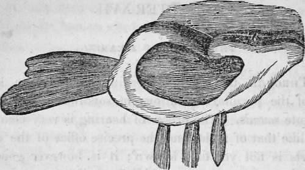
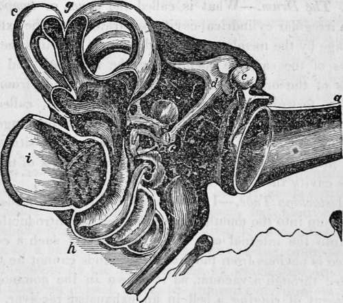

Chapter XVII. The Sense Of Hearing
Description
This section is from the book "Human Physiology For The Use Of Elementary Schools", by Charles Alfred Lee. Also available from Amazon: Human Physiology, for the Use of Elementary Schools.
Chapter XVII. The Sense Of Hearing
1. Through the sense of hearing, we obtain a knowledge of the peculiar vibrations of sonorous bodies, which constitute sounds. The organ of hearing is very compiica cated, like that of sight, and the precise office of the different parts is not yet fully known ; it is, however generally divided into the outer, the middle, and the inner part, and the auditory nerve.
2. The External Ear
The outer part of the organ of hearing consists of what is called the external ear, and the cavity which leads to the ear drum ; and is composed chiefly of cartilage, covered with the skin, and supplied with bloodvessels and nerves. Its use is to collect sound, or rather the vibrations of the air, and transmit them through the tube that leads to the ear drum. For this purpose it is admirably contrived ; its surface being smooth and folded into grooves, which, assisted by a raised border and several concave spaces, conduct whatever sounds fall upon it, with the greatest certainty, directly to the drum of the ear. The external ear is furnished with muscles, and savages are said to have the power of raising or bringing forwards their ears, like a horse, to catch sounds as they come from different directions ; but the habits of civilized life destroy this faculty. The following cut represents the external ear, and the muscles by which it is moved, (See Fig. 1.)
3. Various names are assigned to the different portions of the external ear, such as helix to the outer border, scapha, the large boat like depression, etc. ; but passing these by, as of little importance, we remark that the external ear is confined to the class mammalia, nor does it always exist among them, for the mole, the water shrew, and other diving animals, seals and whales, are destitute of it. Indeed, as water is a much better conductor of sound than air, there would seem to be little occasion for the external ear in them ; but they suffer in consequence, when they attempt to live with their heads out of water. Owing to this obtuseness of hearing in the whale, he is easily approached by the whaler, and before he hears the oars of his enemy, the harpoon is fixed into his unwieldy carcass. In like manner, the walrus and the seal remain unconscious of the footsteps of their foe, till it is too late to retreat. In land animals that are timid, as the hare and rabbit, the ear is very large, so that they may be apprized of the approach of their enemy in time to flee to a place of safety.
Fig. 1. External Ear and Muscles.
4. The Tube Of The External Ear
This is the passage, called by anatomists meatus auditorius externus, which extends from the outer ear to the tympanum or drum, which is stretched across its inner end. This passage is about ten lines, or nearly an inch in length ; and pursues a somewhat winding course inwards, a little forwards and downwards ; its external portion being composed of cartilage, and its internal of bone. The width, as well as tension of this tube, are effected by the motions of the jaw, as any one can learn by placing his little finger in his ear, and then opening and closing the mouth. This is, no doubt, one reason why a person stands with his mouth open when he is listening attentively. This tube being constantly open, is liable to the entrance of foreign bodies, such as dust, insects, and the like. But, like the eye, it is not left without means of defence, for on its inside, there are numerous fine bristles, which interlace and prevent the entrance of any thing but sound ; while between the roots of these hairs, there are numerous little glands, which secrete a nauseous bitter wax, which by its offensiveness, either deters insects from entering, or if they do, entangles them, and thus prevents any further advance. This wax often becomes hard, and obstructs the tube, causing more or less deafness. This form of deafness is easily cured, although it may have existed even for years. When the ear is dry, from a deficiency of wax, the hearing also becomes imperfect, as also when it is thin and purulent.
Fig. 2. General sectional view of the structure of the ear; a, the meatus auditorius externus ; b, the tympanum ; c, the malleus ; d, the incus ; e, the os orbiculare ; f, the stapes ; g, the semicircular canals ; h, the cochlea ; i, the meatus auditorius internus; k the eustachian tube.
5. Membrane of the Drum, stretched across the inner end of the auditory tube, is a membrane, called by anatomists the membrane of the tympanum, (membrana tympani,) or drum of the ear. It is somewhat oval in shape, but hollowed out, or depressed at the centre, where, as we shall presently see, it is fastened to the end of a small bone. This membrane is tense like a drum head, thin, and transparent. Its use is to convey the vibrations of the atmosphere to the expansion of the optic nerve in the internal ear. It does not seem entirely essential to the function of hearing, as the hearing sometimes remains after it is destroyed. When it is ruptured, a person can force the air out of his ear ; but while it remains entire, it is impossible for insects or other bodies to get into the drum, as is generally believed. The drum is capable of being rendered more or less tense, and thus of moderating the intensity of vibrations transmitted to it.
6. The Drum
What is called the drum, or tympanum, is an irregular cylindrical cavity, separated from the external passage by the membrane of the drum. It contains the little bones of the ear, the openings to the labyrinth and other parts of the organ. Anteriorly a passage leads from this cavity, forwards and downwards to the throat, called the Eustachian tube. . Posteriorly there are several openings into osseous cells, called the mastoid cells, which are situated in that projecting process of bone immediately back of the ear. This cavity then is filled with air.
Continue to:
Tags
humans, anatomy, skeleton, bones, physiology, organs, nerves, brain